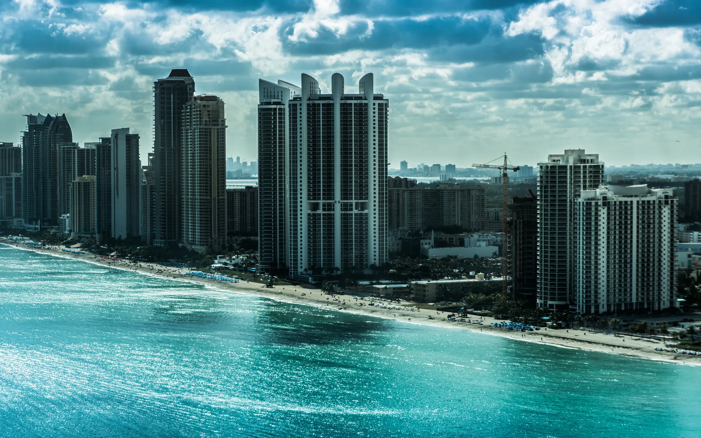

Em Sunny Isles Beach, quase tudo o que está à venda são apartamentos, em torres enfileiradas entre o mar e o Intracoastal, de prédios mais antigos a torres novas de alto luxo. Aqui você compra o prédio tanto quanto a unidade: reservas, inspeções, seguro e regras de aluguel definem quanto você vai gastar por mês. O escritório do Rui Cunha, corretor brasileiro, fica em Coral Springs, e ele atende clientes em toda a Flórida, inclusive em Sunny Isles.
Como é Sunny Isles Beach
Sunny Isles Beach é uma cidade pequena numa ilha-barreira no nordeste de Miami-Dade, entre o Oceano Atlântico e o Intracoastal, com a Collins Avenue (A1A) como rua principal (Wikipedia). Tinha 22.788 habitantes estimados em abril de 2024 (Florida EDR). A cidade foi criada em 1997, e desde então torres de apartamentos e hotéis substituíram a maior parte dos antigos motéis da praia. O skyline já foi apontado entre os mais altos dos Estados Unidos. É uma comunidade muito internacional: nos dados de 2020, a ascendência mais declarada era a russa (cerca de 15%), seguida de cubana, colombiana e venezuelana (Wikipedia).
Brasileiros em Sunny Isles
O Census estima cerca de 500 moradores nascidos no Brasil em Sunny Isles (ACS 2020–2024, com margem de erro de uns 240 para mais ou para menos), perto de 2% da população (Census ACS via Census Reporter). Esse número conta só quem mora aqui, e não os proprietários que vivem no Brasil e usam o apartamento parte do ano.
O perfil desse comprador aparece na pesquisa de 2025 da Miami Association of Realtors (agosto de 2024 a julho de 2025): dos brasileiros que compraram, 67% escolheram Miami-Dade, 63% compraram apartamento, 51% pagaram à vista e 73% pretendiam alugar o imóvel, usar como casa de férias ou as duas coisas (Miami Realtors, 2025). Se esse é o seu plano, leia com atenção a parte de aluguel abaixo.
Prédios e localização
Em Sunny Isles, a escolha é mais de prédio do que de bairro:
- Torres de frente para o mar. Do lado do oceano da Collins Avenue, com acesso direto à praia.
- Lado do Intracoastal. Prédios do lado oeste da Collins, de frente para a baía e o Intracoastal.
- Prédios mais antigos. Ainda existem entre as torres novas e merecem análise cuidadosa pelas regras de segurança de condomínio.
O Rui pode comparar as vendas recentes e as taxas de vários prédios lado a lado.
Mercado imobiliário em Sunny Isles Beach
Segundo o Zillow, o valor típico de um imóvel em Sunny Isles Beach era de cerca de US$ 651 mil em agosto de 2026, uns 1% acima do ano anterior (Zillow Home Value Index). Relatórios regionais mostram a mesma calmaria nos apartamentos: a Corcoran apontou mediana de cerca de US$ 630 mil para apartamentos nas praias de Miami no 2º trimestre de 2026, uns 4% abaixo do ano anterior (Corcoran, 2T 2026), e a Miller Samuel registrou cerca de 132 dias para vender em Miami Beach e nas ilhas-barreira no 4º trimestre de 2025 (Miller Samuel).
Esses números cobrem uma área bem maior que Sunny Isles, e dentro da cidade os preços vão de unidades antigas a coberturas milionárias. Peça ao Rui uma comparação atualizada do prédio que você quer.
Cuidados práticos: condomínio, enchente e Airbnb
Regras de condomínio (SB 4-D e SB 154). A Flórida endureceu as leis de condomínio depois do desabamento do Champlain Towers South, em 2021, na vizinha Surfside (Wikipedia). Prédios de três andares ou mais precisam de inspeções periódicas (aos 30 anos, ou 25 se a prefeitura exigir — SB 154, 2023) e de um estudo de reservas estruturais com reservas financiadas (Rimkus). Há relatos de cobranças extras (special assessments) de US$ 10 mil a mais de US$ 100 mil (24-7 Press Release). Antes da oferta, peça o estudo de reservas, o orçamento, os laudos de inspeção e o histórico de cobranças extras.
Enchente e seguro. Com a nova forma de cálculo da FEMA, Sunny Isles está entre os lugares mais caros do sul da Flórida para segurar contra enchente (WLRN). Quem tem seguro pela Citizens vai precisar de cobertura contra enchente, exigência que entra aos poucos até 2027 (News4JAX). Pergunte o que o seguro do prédio cobre e o que fica por sua conta.
Airbnb e aluguel por temporada. Para alugar por temporada, a prefeitura exige uma licença de aluguel de curta temporada para cada unidade, autorização por escrito do condomínio (ou regimento que permita), licença estadual de hospedagem e registro de impostos na Flórida e em Miami-Dade (City of Sunny Isles Beach). O condomínio pode dizer não, então leia o regimento antes de comprar. Veja também o guia de aluguel por temporada na Flórida.
Impostos. A isenção homestead é só para quem mora no imóvel como residência principal; quem mora no Brasil não tem direito. Na hora de vender, não residentes podem ter retenção de imposto pelo FIRPTA; veja o guia FIRPTA e converse com um contador.
Escolas
Sunny Isles é atendida pelas escolas públicas de Miami-Dade, e a escola pública da cidade é a Norman S. Edelcup/Sunny Isles Beach K-8 (Wikipedia). Confirme a escola de cada endereço no localizador do distrito e consulte as notas no site do Departamento de Educação da Flórida.
Comprar com o Rui em Sunny Isles Beach
O Rui trabalha com imóveis no sul da Flórida desde 2003, como mortgage broker, broker e General Contractor licenciado, o que ajuda muito a ler o estudo de reservas ou o plano de obras de uma torre. O escritório fica em Coral Springs, e ele atende clientes em toda a Flórida. Ele ajuda você a comprar casa na Flórida, a entender o financiamento com ITIN ou a investir na Flórida morando no Brasil. Faça as contas na calculadora de financiamento, incluindo condomínio e seguro, e compare com Aventura e Miami Beach.
Perguntas frequentes
Quanto custa um apartamento em Sunny Isles Beach?
O Zillow apontou valor típico de cerca de US$ 651 mil em agosto de 2026, uns 1% acima do ano anterior. Os preços vão de unidades antigas a coberturas de frente para o mar, então compare as vendas recentes do prédio que você quer.
Posso colocar meu apartamento de Sunny Isles no Airbnb?
Só se o condomínio permitir e você tirar a licença de aluguel de curta temporada da prefeitura, além dos registros estaduais e do condado. Leia o regimento do prédio antes de comprar.
Comprar em Sunny Isles me dá visto ou green card?
Não. Comprar imóvel não dá direito a visto nem green card. Para imigração, fale com um advogado especializado.
Dá para financiar em Sunny Isles sem Social Security?
Muitos compradores usam o financiamento com ITIN, sempre sujeito à aprovação do banco. Quem mora no Brasil também pode comprar; fale com o Rui para entender as opções.
Fale com o Rui
Comparando prédios em Sunny Isles? Peça ao Rui uma comparação atualizada das vendas recentes e das taxas dos prédios que você gostou.